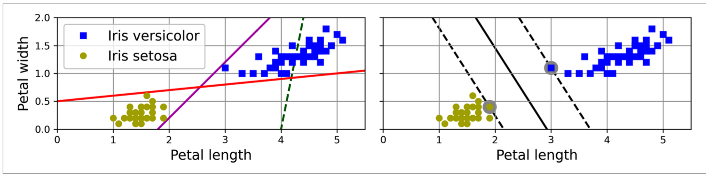
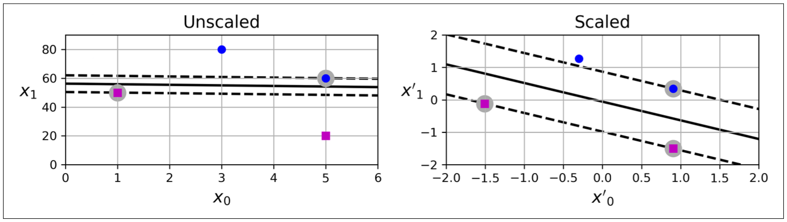
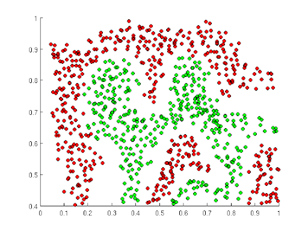
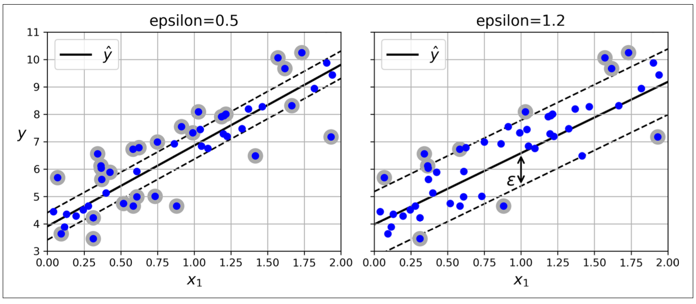
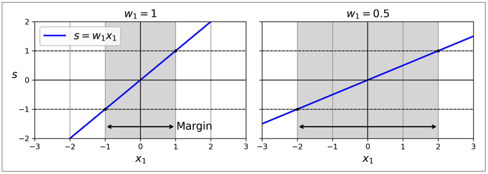
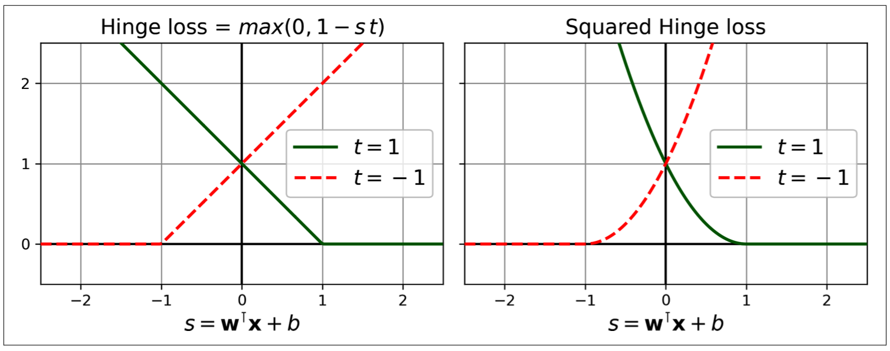
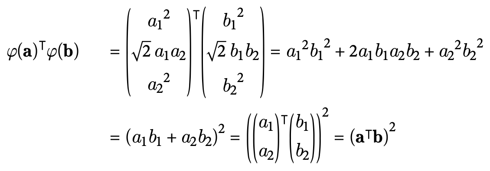
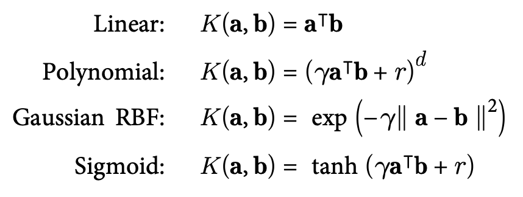

Support Vector Machine (SVM) is a powerful and versatile machine learning model, capable of performing linear or nonlinear classification, regression, and even novelty detection. It works well with small to medium-sized datasets, but unfortunately do not scale well and sensitive to feature scaling.
Important notes to remember
SVMs: fit the largest street while limiting the margin violations, supported by support vector on the street (SVC) or off the street (SVR).
LinearSVC/LinearSVR use liblinear library: optimize for linear SVMs, scale well
SVC/SVR classes use libsvm: support kernel trick, scale badly
8.1 Linear SVM Classification (Support Vector Classification - SVC)
Support Vector Machine (Large Margin Classification): Fitting the widest street between classes, supported by support vector instances on the street.

Figure 8.1: Large margin classification
SVMs are sensitive to feature scaling. As we can see, SVM seperate the data better with scaled data.

Figure 8.2: SVMs are sensitive to feature scaling
Hard margin/Soft margin classification
- Hard margin: All instances must be off the street, only work with linearly seperable data and sensitive to outliers
- Soft margin: improve weakness of hard margin by allow limiting margin violations
Hyperparameter C: the penalty on any misclassified data point.
- High: high penalty, stricter classification, narrower street and tends to overfit
- Low: low penalty, allow larger number of misclassifications, wider street and tends to underfit
/usr/local/anaconda3/envs/dhuy/lib/python3.11/site-packages/sklearn/svm/_classes.py:32: FutureWarning:
The default value of `dual` will change from `True` to `'auto'` in 1.5. Set the value of `dual` explicitly to suppress the warning.
8.2 Non-linear SVM Classification
With non-linearly seperable datasets in low dimensions, we want to transform them to a higher dimension where they will be linearly sepparable. Imagine “raising” the green points, then you can sepparate them from the red points with a plane (hyperplane).

Figure 8.4: Non-linearly seperable
To do that, we can use more complex models (Random forest, etc.) or add more features (Polynomial features, similarity features using Gaussian RBF, etc.), but this will lead to a huge bunch of new features and computationally expensive.
Therefore, SVM supply a powerful technique called kernel trick, allow us to get the same result as if add many polynomial/similarity features, without actually having to add them.
Polynomial kernel
from sklearn.svm import SVCpoly_svc = make_pipeline(StandardScaler(),SVC(kernel='poly', degree=3, C=10, coef0=1))
Opposed to SVC, SVR tries to fit as many instances as possible on the street while limiting margin violations (instances off the street)
Hyperparameter epsilon: control the width of the street - Low: narrow street, more support vector, tend to too complex - High: wide street, less support vector, tend to too simple
import numpy as npfrom sklearn.svm import SVRnp.random.seed(29)m =100X =6* np.random.rand(m, 1) -3y =0.5* X **2+ X +2+ np.random.randn(m, 1)svr = make_pipeline(StandardScaler(),SVR(kernel='poly', degree=5, C=0.001, epsilon=0.1))svr.fit(X,y.ravel())svr.predict([[3]])
array([3.31601563])

Figure 8.7: Different epsilons
8.5 Understand the Fundamentals of SVM
To predict the class of an instance, SVM compute decision function, then compare to the margin of the street to predict.
\[y = θ_{0} + θ^{Τ}X\]
Suppose that the margin is (-1,1). With the same margin, to make the wider street, we have to make the θ smaller.

Figure 8.8: A smaller weights results in a larger margin
8.5.1 Quadratic Programming Problem (QP solver)
Hard margin classification
To avoid the margin violations, we have to minimize the θ while making the decision function ≥1 for positive instances and ≤-1 for negative instances. This constraint can be written using t = 1 or t = -1 repectively:
To perform soft margin classification, we add a slack variable ζ(i) ≥ 0 for each instance: ζ measure how much the instance is allowed to violate the margin.
Expectedly, we want to keep ζ as small as possible to reduce margin violations, but we also want the margin as wide as possible (too greedy 😆). Don’t worry, this is where the C parameter comes into play.
Cost function: hinge loss or the squared hinge loss (loss hyperparameter)
Decision function:
- ≥ 1: true label is positive => loss = 0
- ≤-1: true label is negative => loss = 0
By default: LinearSVC use squared hinge loss, while SGDClassifier use hinge loss

Figure 8.9: The hinge loss and squared hinge loss
8.5.3 Kernelized SVMs
As mentioned in Section 8.2, when we want to perform on more complex model like polynomial or RBF, kernel trick can compute the dot product in the minimization work directly on the original vectors a and b, without even know about the transformation. The Figure 8.10 illustrate the kernel trick for a second-degree polynomial

Figure 8.10: Kernel trick for a second-degree polynomial
These are the common kernels, in which K is the kernel function:

Figure 8.11: Common kernels
d: degree
r: coef0
γ: gamma, ≥ 0
Learn more about Dual problem, equation to make predictions with kernel trick